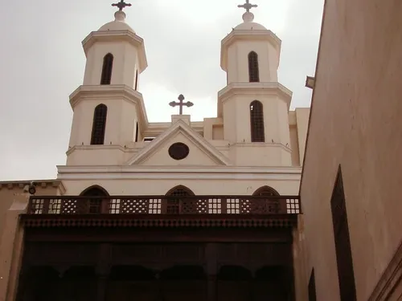
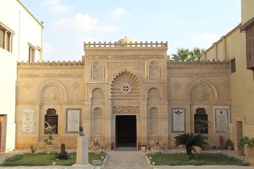
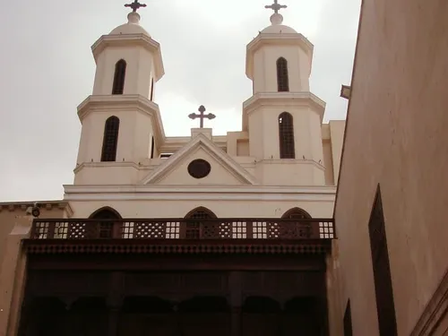
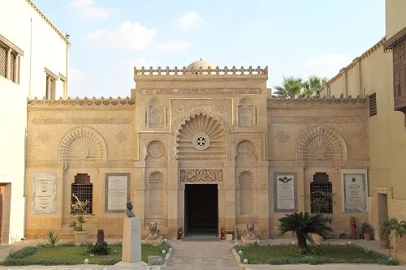
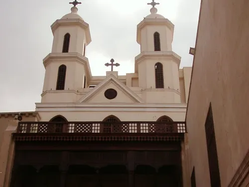
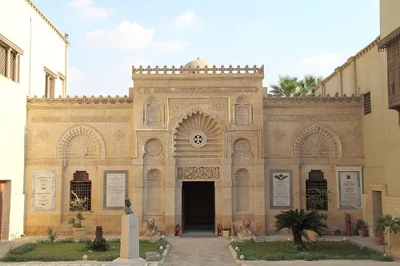
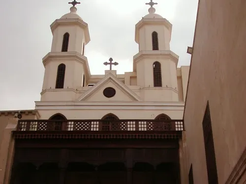
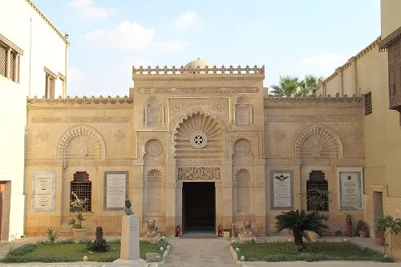

Le Quartier Copte est le cœur historique de la communauté chrétienne d'Égypte, situé à l'intérieur des murs de la forteresse romaine de Babylone. Ce dédale de ruelles étroites abrite certaines des plus anciennes églises chrétiennes au monde, des monastères et le fascinant Musée Copte.
Parmi les sites majeurs figurent l'église suspendue (Al-Muallaqa), datant du 3ème siècle et construite sur les vestiges d'une tour romaine, l'église Saint-Serge où la Sainte Famille aurait séjourné, et la synagogue Ben Ezra, la plus ancienne d'Égypte.
Le quartier s'est développé autour de la forteresse romaine de Babylone, construite au 1er siècle après J.-C. Avec l'arrivée du christianisme, il devint un centre important pour la communauté copte, qui représente environ 10% de la population égyptienne aujourd'hui.
Au Moyen Âge, c'était le principal quartier chrétien du Caire avant l'expansion de la ville. Malgré les périodes de tension, le quartier a conservé son caractère unique et ses traditions religieuses vivaces.